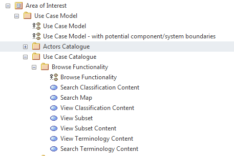

A Catalogue within a model is a collection of elements of the same type brought together under a single classification. In
modelling terms a Catalogue Package is a folder in which is placed all the elements of the same type, at one location, to
facilitate easier reuse and management (e.g. Actor or Use Case elements).
packages used as catalogues
packages used as catalogues
Folders as Catalogue Packages within an Analysis Model (Actors as well as Use Case Catalogues)
The purpose behind using a package to define a ‘Catalogue’ is to keep all the elements of the same type together as well as
facilitate to easier reuse, this is particularly useful where a particular element type maybe reused by several different
modelled configurations / diagram types.
NOTE: - The use of Packages as Catalogues is not a formal part of the UML specification but is a suggested means for organising
types of elements, typically of the same type (e.g. Actor or Use Case elements).
Catalogue packages may also contain sub-package structures to support more complex content organisation schemes.
The construction of a Catalogue Package within UML Models is defined within the generic Packages Core Notations section.